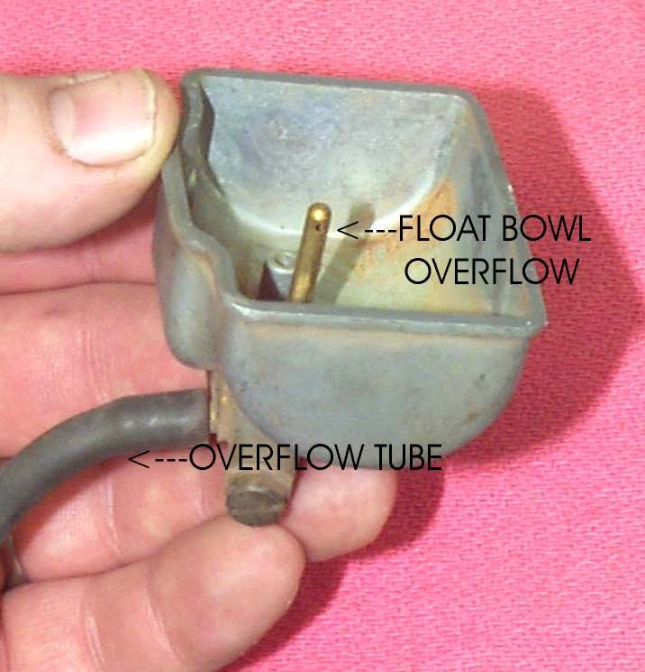
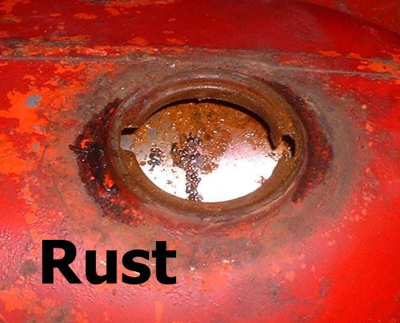
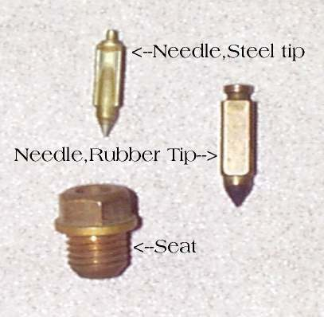

You see fuel dripping, a wet patch under the bike, a wet tank, hose or carburettor, or a rainbow stain on the ground. Petrol leaking near a hot engine and exhaust is the biggest fire risk on a motorcycle. Find the source before you ride again. Most leaks come from a hose, a clip, the fuel tap, the carburettor float bowl or overflow, or the tank itself.
Is it safe to ride?
No. Stop now, switch off the engine and turn the fuel tap OFF. Move the bike away from people, flames and hot parts. Do not ride until the leak is fixed.
Quick checks first
- Turn the tap OFF (carburettor bikes). Does the drip stop within a minute?
- Is the tank overfilled, or the bike parked steeply on its side stand?
- Is fuel coming from the small overflow pipe under the carburettor?
- Is the fuel cap closed and its seal in place?
- Fuel-injected: is the wet spot near the pump on the tank, the hose connector or the injector?
- If the tap flows but will not shut off, a plastic inline shut-off valve in the hose is a cheap fix.
- A crack or hole in a steel tank can be welded only by someone who purges the tank of air with an inert gas first. Filling it with water is not enough. Do not weld or solder a tank yourself.
- Plastic glue is not a safe fix for a plastic tank. Two-part tank epoxy can last a time on a steel tank, and then fail.
Diagnose it step by step
1Engine cold, bike upright on level ground. Dry everything with a rag. Where does fuel appear first? Use a strip of clean paper to find the exact spot.
- Carburettor overflow pipe: go to Fuel pours out of the carburettor overflow pipe.
- Hose, clip, filter or tap joint: go to step 2.
- Carburettor float bowl joint or drain screw: go to step 3.
- Tank seam, tank bottom or around the tap: go to step 4.
- Around the filler cap: go to step 5.
- Fuel-injected pump, hose connector or injector: go to step 6.
2Is a hose cracked, swollen, hard or loose on its spigot?
- Yes: replace the hose with fuel-rated hose of the same size and fit good clips. A weeping tap body or O-ring: drain the tank and refit the tap with a new seal. Check the fuel tap, lines and flow. A leaking filter: replace it.
3Is the drain screw loose, or the bowl gasket flat or cracked?
- Tighten the drain screw gently. If the bowl joint weeps, fit a new gasket: Check the carburettor float shows how to remove the bowl.
4Is there a pinhole, rust bubble or wet seam on the tank?
- Yes: drain the tank at once: Drain old or contaminated fuel. A rusted or holed tank is replaced or repaired by a specialist. Never weld or solder a fuel tank yourself. See Remove rust from a fuel tank.
5Does fuel weep from the cap after filling, or when the bike leans?
- Do not fill above the bottom of the filler neck. Check the cap seal and vent: Clean and lubricate the fuel cap and check the tank vent.
6Fuel-injected: is the leak at the pump seal, the hose connector or the injector?
- Do not open the system: it is under pressure. Turn the key OFF and take the bike to a workshop. The K-Light 125 manual requires a new pump seal ring and a leak check before running after any pump or injector work. See Check the fuel pump and Check the fuel injector.
After any fix, turn the fuel ON (or key ON to prime the pump) and watch every joint for five minutes before starting.
Causes, most likely first
| Cause | How to confirm | Fix |
|---|---|---|
| Cracked or loose fuel hose, weak clip | Wet joint, hard or split hose | Tap and lines |
| Stuck float needle (overflow running) | Fuel from overflow pipe | Float check |
| Fuel tap seal or body leaking | Wet around the tap | Tap and lines |
| Overfilled tank or bad cap seal | Wet around the cap | Fuel cap |
| Float bowl gasket or drain screw | Wet at the bowl | Float check |
| Rusted or damaged tank | Pinholes, wet seam | Tank rust |
| Pump seal, connector or injector O-ring (injection) | Wet near pump or injector | Injector check |